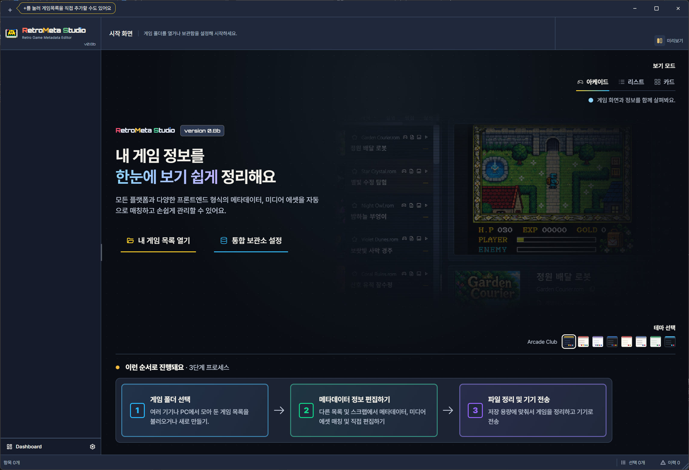
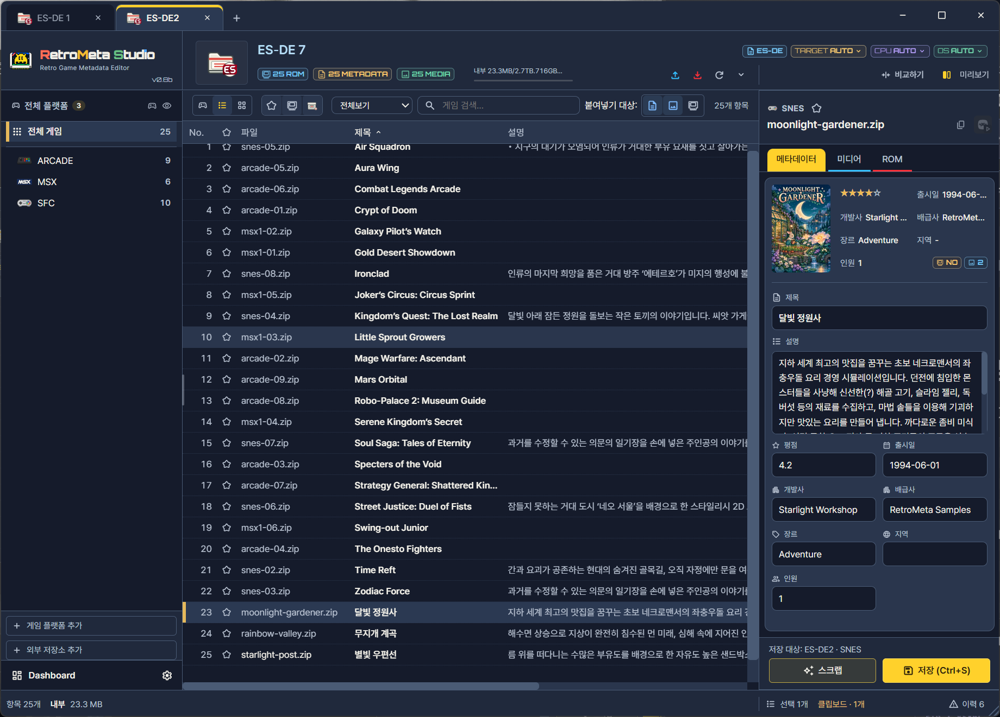
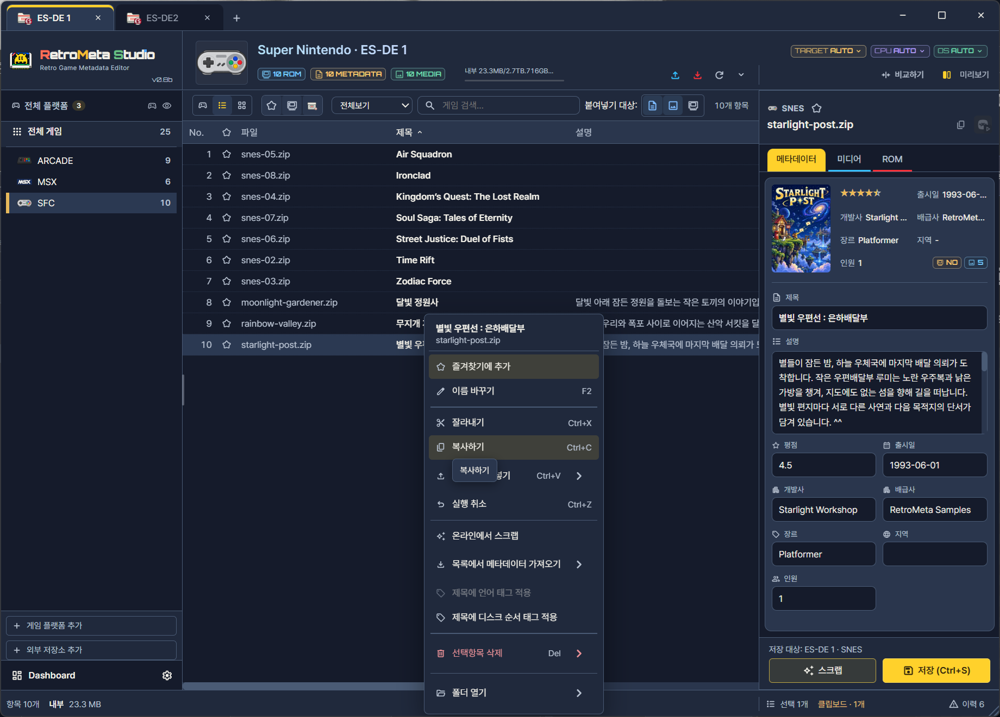

처음 사용자용
샘플 게임목록으로 열기 → 게임 찾기 → 편집·저장 → 복사하기를 연습합니다. Windows x64에서 진행합니다.
샘플 게임목록 받기 · 리스트 보기를 기준으로 합니다.
ZIP을 풀면 Collection-A와 Collection-B 폴더가 나옵니다. 두 폴더를 복사해 연습하고, 표시 이름은 각각 ES-DE 1과 ES-DE 2로 정합니다. 이 안내에서는 두 게임목록을 A와 B로 구분합니다. ZIP을 푼 상위 폴더가 아니라, gamelists와 downloaded_media가 함께 들어 있는 Collection-A 또는 Collection-B 자체를 선택합니다.
준비물
| 단계 | 필요한 것 |
|---|---|
| 1~4 | Collection-A / Collection-B 복사본 · 탭 이름 ES-DE 1 / ES-DE 2 |
게임 목록 폴더 선택하기
컬렉션으로 등록할 때 게임 목록 폴더 에 지정할 위치는 프론트엔드마다 다릅니다. 형식을 고르면 지정할 폴더와 안의 구조를 볼 수 있습니다. 이 따라하기의 샘플은 ES-DE 형식입니다.
ES-DE 폴더/ ← 지정하는 폴더
├─ gamelists/
│ └─ snes/
│ └─ gamelist.xml
└─ downloaded_media/
└─ snes/
├─ covers/
├─ screenshots/
└─ videos/지정하는 폴더 는 gamelists 와 downloaded_media 를 함께 담고 있는 상위 폴더입니다.
- 시스템마다 하위 폴더가 하나씩 있고, 게임 정보는
gamelist.xml에 저장됩니다. - 커버·스크린샷·동영상은
downloaded_media의 시스템 폴더에 종류별로 나뉩니다. - 저장 형식은 ES-DE 로 표시됩니다. 이 따라하기의 샘플 ES-DE 1가 이 구조입니다.
Pegasus 루트/ ← 지정하는 폴더 └─ snes/ ├─ metadata.pegasus.txt ├─ 게임.zip └─ media/게임/boxFront.png
시스템 폴더들을 담은 상위 루트를 지정합니다. 각 시스템 폴더의 metadata.pegasus.txt 또는 기존 metadata.txt를 읽습니다.
- 게임 정보는 메타데이터 텍스트 파일 하나에 시스템·게임 단위로 기록됩니다.
- 미디어는
media폴더 아래에 게임별 폴더로 모입니다. - 저장 형식은 Pegasus 로 표시됩니다.
LaunchBox 폴더/ ← 지정하는 폴더
├─ Data/
│ └─ Platforms/
│ └─ Super Nintendo Entertainment System.xml
└─ Images/
└─ Super Nintendo Entertainment System/
├─ Box - Front/
└─ Screenshot - Gameplay/지정하는 폴더 는 Data 와 Images 를 함께 담고 있는 LaunchBox 설치 폴더입니다. Data/Platforms와 Images가 들어 있는 LaunchBox 루트를 지정합니다.
- 시스템(플랫폼)마다 XML 파일이 하나씩 있습니다.
- 이미지는
Images아래에 시스템과 종류별로 나뉩니다. - 저장 형식은 LaunchBox 로 표시됩니다.
EmulationStation 폴더/ ← 지정하는 폴더
├─ gamelists/
│ └─ snes/
│ └─ gamelist.xml
└─ downloaded_images/
└─ snes/지정하는 폴더 는 gamelists 를 담고 있는 상위 폴더입니다. gamelists/<system>/gamelist.xml 또는 시스템 폴더의 gamelist.xml을 읽습니다. 미디어는 XML의 image·video·marquee·thumbnail 경로로 연결됩니다. downloaded_images는 가능한 배치 예시입니다.
- 구조는 ES-DE와 비슷하지만 미디어 폴더 이름과 하위 구성이 다릅니다.
- 저장 형식은 EmulationStation 으로 표시됩니다.
게임목록 열기
내 게임 목록 열기를 누르고 Collection-A 폴더를 고릅니다.

- 1내 게임 목록 열기

- 1이 PC (로컬)
- 2게임목록 폴더 찾기
- 3저장 형식
- 4ROM 관리 체크 끄기
- 5컬렉션 이름
- 6컬렉션 추가 완료
자세한 순서
- 이 PC (로컬) 을 선택합니다.
- 게임 목록 폴더 에 복사한 Collection-A 폴더를 지정합니다. 저장 형식이 ES-DE 로 표시되는지 봅니다.
- ROM도 Collection에 포함하여 관리 는 끕니다. 샘플은 정보와 미디어만 씁니다.
- 컬렉션 추가 완료 를 누릅니다.
게임 찾기
왼쪽에서 SFC를 고르고, 검색창에 "별빛"을 입력한 뒤 별빛 우편선을 누릅니다.
- 1SFC 시스템
- 2리스트 보기
- 3검색창
- 4별빛 우편선
제목과 설명 고치고 저장하기
게임 복사하기
두 번째 목록(ES-DE 2)을 열고, A의 게임 하나를 B로 복사합니다.

- 1받는 게임목록 탭


- 1메타데이터 + 미디어
- 2복사하기
받는 게임목록 탭으로 이동한 뒤 Ctrl+V로 붙여넣습니다.


- 1남은 충돌에 모두 적용
- 2이 게임 건너뛰기
- 3기존 게임 덮어쓰기
자세한 순서
- 복사한 Collection-B 폴더를 등록하고 컬렉션 이름을 ES-DE 2로 지정합니다. 원본은 ES-DE 1 탭(A), 받는 대상은 ES-DE 2 탭(B)입니다.
- A 탭에서 게임을 선택하고 우클릭 복사 또는
Ctrl+C를 누릅니다. 복사 범위는 메타데이터와 미디어로 둡니다. - B 탭으로 전환해 시스템을 선택하고 붙여넣기 또는
Ctrl+V를 누릅니다. - 같은 게임이 이미 있으면 충돌 창이 열립니다. 이 게임 건너뛰기는 B를 그대로 둡니다. 기존 게임 덮어쓰기는 선택한 범위의 A 자료를 B에 적용합니다. 제목·설명은 A의 비어 있지 않은 값으로 바뀌고, A의 빈 값은 B를 지우지 않습니다. 미디어도 선택 범위에 따라 바뀝니다. 남은 충돌에 모두 적용을 켜면 뒤의 게임에도 같은 결정을 사용합니다. 처음에는 끄고 게임별로 확인해 보세요.
STAGE CLEAR!
수정한 정보가 다시 보이면 저장된 것입니다. 저장 오류가 나오면 문제가 생겼을 때를 참고하세요. 연습 전에 만든 Collection-A/B 복사본은 그대로 보관합니다.
다음 단계
| 기능 | 안내 |
|---|---|
| 실제 게임 실행 · 별도 준비 | RetroArch 실행 · 샘플 연습을 마친 뒤, 본인의 로컬 ROM과 코어를 준비합니다. ROM 관리가 켜진 별도의 컬렉션에서 진행합니다. |
| 두 목록의 차이를 보고 옮기기 | 목록 간 비교 |
| 빠진 설명과 커버를 온라인에서 찾기 | 온라인 스크랩 |
| 여러 목록의 정보를 한곳에 모으기 | 보관소(Archive) |
| 설명을 번역하기 | CSV 번역 |